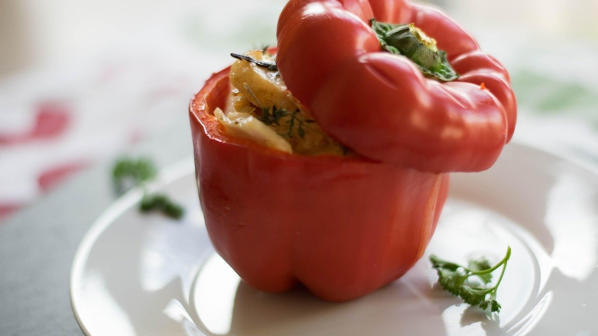

Фаршированный перец с мясом и рисом: 5 ошибок, из-за которых начинка выходит сухой

Фаршированный перец в кастрюле с мясом и рисом кажется самым простым блюдом осени. Нарезал, начинил, залил и забыл. Но именно здесь легче всего получить сухую начинку и лопнувшие перцы.
Это моё любимое сезонное блюдо. Осенью перец самый мясистый, сладкий и недорогой, поэтому у нас дома фаршированный перец бывает чаще всего именно в октябре.
Почти все проблемы с ним из-за риса и воды. Рис забирает влагу у мяса, а перец не любит, когда его тушат на сильном огне.
Ошибка №1: класть в начинку сырой рис
Сырой рис во время тушения разбухает и впитывает весь сок из фарша. Мясо остаётся сухим, а начинка распирает перец изнутри, и он трескается.
Что делать: отварить рис минут 5–7, до полуготовности, и только потом смешать с фаршем.
Полностью сваренный рис тоже не подходит: за время тушения он превращается в кашу. Нужна середина, когда зёрна ещё твёрдые внутри.
Ошибка №2: набивать перец до отказа
Хочется положить побольше начинки, чтобы было сытнее. Но фарш при нагреве немного увеличивается в объёме, и плотно набитый перец разрывается по бокам.
Что делать: наполнять перец не до самого края и не утрамбовывать начинку ложкой.
Сверху можно оставить сантиметр свободного места. Начинка поднимется сама и как раз заполнит его.

Ошибка №3: брать любые перцы
Перцы с тонкими стенками разваливаются раньше, чем начинка готова. А если в кастрюле одни большие, другие маленькие, мелкие переварятся, пока крупные доходят.
Что делать: выбирать мясистые перцы примерно одного размера, которые устойчиво стоят на донышке.
Удобнее всего ставить их в кастрюлю вертикально и плотно друг к другу. Так они не падают и не теряют начинку. По цвету выбирайте на вкус: красные и жёлтые слаще, а зелёные дают лёгкую горчинку.
Ошибка №4: заливать одной водой
Если залить перцы просто водой, соус получается пустым, а начинка отдаёт ему весь вкус. В итоге и перец пресный, и подливка как бульон.
Что делать: обжарить лук и морковь с томатной пастой, развести горячей водой и залить перцы почти до верха.
Соль и немного сахара лучше добавить прямо в заливку. Сахар смягчает кислинку томата, а перец во время тушения пропитывается соусом.
Ошибка №5: тушить на сильном огне
Когда кастрюля бурно кипит, перцы толкаются, кожица лопается, а начинка выпадает. Снаружи блюдо уже разварилось, а внутри фарш ещё не готов.
Что делать: после закипания убавить огонь до слабого и тушить под крышкой 40–50 минут.
Заливка должна едва булькать. Готовность легко проверить: перец мягкий, а в разрезе начинка однородная, без розового.
Про фарш для начинки
Для перца лучше всего подходит смешанный фарш из говядины и свинины. Говядина даёт вкус, а свинина жир, без которого начинка сохнет даже при правильном рисе.
Если готовите из курицы или индейки, добавьте в фарш тёртую морковь и ложку сметаны. Птица постнее, и ей нужна дополнительная влага.
Лук в начинку натирают мелко или прокручивают вместе с мясом. На один килограмм фарша обычно хватает стакана сухого риса, а после варки его становится примерно вдвое больше.
Если запомнить только одно
Рис в начинку кладут полуготовым. Это одно меняет всё блюдо: мясо остаётся сочным, а перцы не трескаются.
Ещё мелочь, которую часто пропускают. Готовому перцу полезно постоять под крышкой минут 15. За это время начинка забирает часть соуса и становится заметно вкуснее, чем сразу с плиты.
Подают фаршированный перец со сметаной, а соус из кастрюли так и просит хлеба.
С чем вы едите фаршированный перец: со сметаной, с хлебом или просто так?